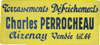

La Société Des Entreprises Perrocheau (SEDEP)
Multi-activités, SEDEP prend en charge tous travaux de réalisation de terrassement, d'assainissement, d'adduction d’eau potable, de réseaux souples, de voirie. Nous intervenons pour la réalisation d'aménagements urbains, de lotissements publics et privés, d’hôtellerie de plein air et de sites industriels et commerciaux.

SEDEP exploite en outre sa propre carrière :
350 000 tonnes de matériaux par an sur une superficie de 29 ha.
Historique et chiffres clés
Entreprise de travaux agricoles créée après guerre par Athanase Perrocheau, Charles Perrocheau, son fils, oriente rapidement son activité vers les travaux publics et le remembrement. En 1971, la société SEDEP est créée et compte alors une vingtaine de collaborateurs, puis une quarantaine en 1973. En 1994, Olivier Perrocheau reprend la société familiale, qui connaît une montée en puissance pour atteindre un effectif de 83 collaborateurs fin 2008.
En janvier 2009, le groupe Nivet, basé à Saumur, rachète la société SEDEP.
En 2010, SEDEP réalise un chiffre d'affaires de 13 millions d'euros.
Équipe
L'organisation des travaux s'effectue sous la responsabilité d'un directeur de travaux qui coordonne l'activité de quatre conducteurs de travaux et 16 chefs d'équipes.
“Directeur des travaux, je réalise le premier rendez-vous avec le client. Après étude de la faisabilité de son projet, j'établis le chiffrage de l'opération. La commande enregistrée, je gère le plan de charge travaux de l'entreprise, effectue le suivi en relation avec les conducteurs de travaux et assure la réception du chantier, une fois celui-ci terminé”.
Franck Loubet, directeur des travaux
Nelly Bernard, responsable QSE
“Ma mission pour l'activité Travaux Publics est très axée sécurité : veille réglementaire, application des procédures et des consignes de sécurité, vérification de la conformité du matériel. Sur un plan plus humain, je suis chargée de l'accueil des salariés, intérimaires et stagiaires, de la gestion du plan de formation et de l'animation du CHSCT (Comité d'hygiène, de sécurité et des conditions de travail)”.
“Avec Olivier Lucas, dessinateur métreur, je suis chargée de la partie topographie des chantiers de Travaux Publics : relevés sur le terrain, élaboration de plans, métrés, implantations sur sites. Une fois les travaux effectués, nous réalisons le plan de recollement”
Delphine Ferrière, géomètre